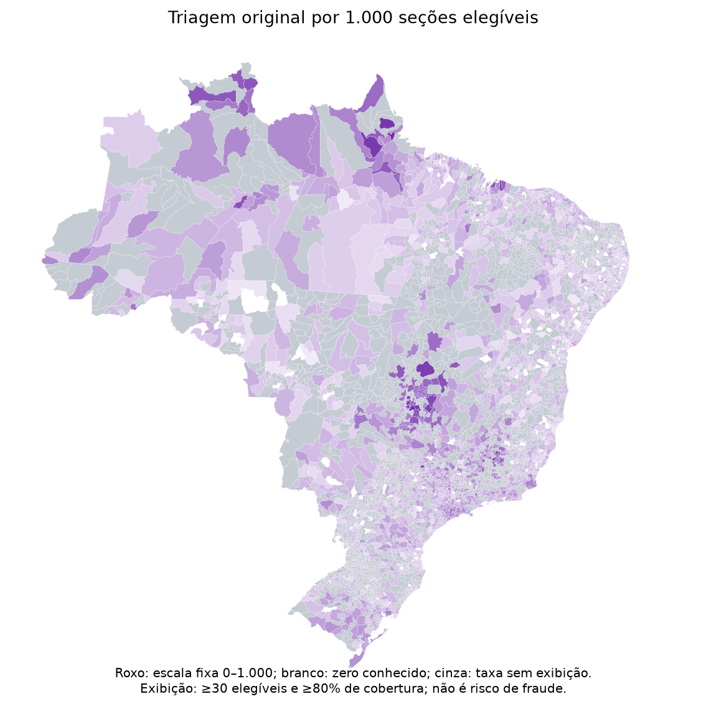

Mudanças observadas, alertas estatísticos e divergências documentais são categorias distintas. Este estudo amplia a localização dos padrões, sem concluir irregularidade ou reconstruir votos individuais.
| Universo | Unidades municipais | Flávio → Lula | Lula → Flávio | Empate no 1º | Empate no 2º |
|---|---|---|---|---|---|
| Brasil | 5571 | 211 | 1 | 2 | 1 |
| Exterior | 186 | 7 | 3 | 1 | 0 |
| Universo | Observadas | Comparáveis | Elegíveis | Alertas originais | Por 1.000 elegíveis |
|---|---|---|---|---|---|
| Brasil | 497897 | 429089 | 428521 | 63796 | 148,87 |
| Exterior | 1351 | 77 | 50 | 13 | 260,00 |
O inventário nacional preserva 499.248 seções e amplia os padrões para todos os estados. No resultado municipal completo do Brasil, 211 unidades passaram de liderança de Flávio para Lula e 1 fizeram o caminho inverso, entre os dois finalistas. Esses resultados são descritivos; a comparabilidade de cada território consta da tabela.
A margem usa 100 × (Flávio − Lula)/(Flávio + Lula) em cada turno. A mudança é segundo menos primeiro: positivo favorece Flávio, negativo favorece Lula. Participações sobre todos os nominais usam outro denominador. Perder vantagem relativa pode ocorrer mesmo ganhando votos absolutos. Inversões são incluídas independentemente de limites de mudança; empates têm identificação própria.
As reduções de vantagem de 5/10/15 pp são calculadas nos dois sentidos. Os resultados por seção, local, município e UF estão no inventário, inclusive os não comparáveis. O escore de margem reutiliza os mesmos 30 pares; a triagem original permanece em reference_alert. O escore adicional não altera aquela seleção.
As taxas usam contagens agregadas: 1.000 × alertas originais entre elegíveis / seções elegíveis. Elas não são médias de taxas municipais e não usam votos, eleitores ou área como denominador. Um denominador zero gera ausência. Os limites de 30 elegíveis e 80% de cobertura são escolhas operacionais de apresentação, ajustáveis no mapa, sem interpretação de precisão estatística.
A coorte das mesmas seções territorialmente comparáveis, incluindo pequenas, é uma análise complementar. Seus valores e coberturas dos dois turnos aparecem ao clicar no mapa e nas tabelas. Ela não substitui o total municipal. Ausências e somas incompletas permanecem ausentes.
Os somatórios disponíveis dos finalistas são confrontados entre níveis e com a fonte oficial nominal. Contagens de linhas ausentes acompanham os somatórios. Conferência de linhas de BU não certifica completude de urnas, a causa de mudanças ou persistência. Brasil e exterior são separados.
As listas estatísticas dependem do método de comparação: o estudo anterior de estabilidade mostrou sensibilidade do topo dos rankings. A lista nacional de prioridades deve ser examinada junto com magnitude absoluta, dispersão e documentação, sem equivalência automática com fraude. As fontes eleitorais, os mapas e as fichas anteriores foram preservados.
Abrir mapa em página própria · PDF explicativo
No modo de mudança, azul indica deslocamento relativo em favor de Flávio e vermelho em favor de Lula, mesmo que a liderança final seja outra. A taxa de triagem é roxa e tem denominador próprio. Branco é zero conhecido e cinza identifica ausência ou taxa sem exibição conforme a legenda de cada modo.


Executar as etapas inventario, taxas e mapas do comando eleicoes nacional, nessa ordem. Saídas preenchidas são recusadas. Os critérios de exibição podem ser ajustados sem alterar os valores descritivos das tabelas.
Relatório de referência · Estabilidade dos pares · Pesquisa documental